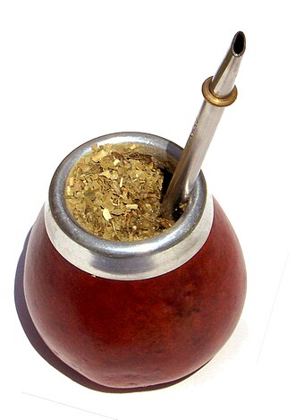
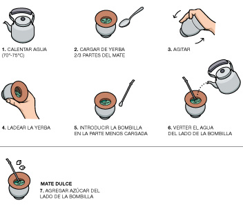

Mate

El mate (en guaraní: ka'ay) es una infusión a base de hojas de yerba mate (Ilex paraguariensis), planta originaria de las cuencas de los ríos Paraguay y Paraná, en Sudamérica. La yerba mate está formada por hojas que son secadas, cortadas y molidas, que tienen sabor amargo debido a los taninos que contienen. Comúnmente se toma amargo, aunque también puede endulzarse con azúcar, estevia u otros endulzantes no calóricos. Al agregar agua a la infusión se genera espuma debido a los glucósidos que la yerba mate contiene.
Es consumido en América desde la época prehispánica por algunas etnias de origen tupí-guaraní, como los avá, los mbyá y los kaiowa, y también, en menor medida, por otras etnias que realizaban comercio con ellos, como los ñandevá, los taluhets (pampas antiguos) y los qom (tobas).Asimismo, fue adoptado rápidamente por los colonizadores españoles y quedó como parte del acervo cultural principalmente en Paraguay, Argentina, Uruguay, Chile, Bolivia, y Sur de Brasil.
A su vez, es consumido en Siria gracias a migrantes sirios en Argentina que llevaron el producto a su país natal y el Líbano.
Se estima que los niveles de la cafeína de una porción de mate rondan el 30 % de los de una porción de café. Anteriormente, se pensaba que tenía un energizante similar pero no igual, al que se llamaba «mateína».
Además, se le suma un efecto diurético, que es compensado por el alto consumo de agua que se realiza cuando se «matea», resultando así una infusión digestiva, depuradora y ―al poseer antioxidantes― preservadora del organismo.
Como las otras infusiones mencionadas, el mate tiene cierta acidez, razón por la que muchas veces se le añaden ―en escasas proporciones― otras hierbas (digestivas, reguladoras de la función hepática, sedantes, etc.) que logran neutralizar la acidez como también compensar el ligero efecto estimulante de la cafeína.
El país con el mayor consumo total de mate en el mundo es Brasil, aunque solo el 20 % de su población lo consume. En cambio, Paraguay, Argentina y Uruguay destacan por tener un mayor porcentaje de consumidores de mate en relación con su población total.
Historia
Los antiguos pueblos guaraníes fueron los pioneros en consumir de diversas formas las hojas de yerba mate, bebiéndola con agua e incluso mascándolas. Los conquistadores españoles hicieron los primeros registros escritos de su consumo en el actual Paraguay en el siglo XVI.
Los mismos jesuitas elogiaron los efectos de la yerba, ya que daba un cierto vigor al que ingería la infusión, y calmaba la sed mejor que el agua pura. El padre Pedro de Montenegro (1663-1728), naturalista, declaró:
«Socorrió Dios con esta medicina a esta pobre tierra por ser más conducente a ella que el chocolate, y vino a sus naturales habitadores así como lo es el cacao en el Oriente, porque estas tierras muy calientes y húmedas causan graves relajaciones de miembros, por la grave aspersión de los poros, y vemos que de ordinario se suda con exceso, y no es remedio el vino ni cosas cálidas para reprimirlo, y la yerba sí, tomada en tiempo de calor con agua fría, como la usan los indios, y en tiempo frío o templado con agua caliente o templada…»
Los mates más antiguos
Para conocer los primeros momentos en la historia del mate como infusión de la yerba Ilex paraguariensis, hay que remitirse a la historia de la ciudad de Santa Fe. Los primeros utensilios y los más antiguos conocidos se encuentran en esta ciudad y fueron excavados en el sitio arqueológico de Santa Fe la vieja. Mucho antes de que se usaran los utensilios que hoy conocemos, los indígenas bebían la infusión en forma de té, agregándole agua caliente o fría a la yerba mate. El recipiente utilizado era el bernegal, hecho con una calabaza grande (Cucurbita moschata) cortada por el medio, mientras con el labio superior se impedía que la yerba pase a la boca sorbiéndola entre los dientes: «Ellos beben el agua entre los dientes delanteros como por un chupador», decía Florián Paucke. Los españoles luego introdujeron el uso de una suerte de cuchara de metal llamada «apartador», con el cual detenían la yerba molida mientras sorbían el té. Con el paso del tiempo, el bernegal de calabaza sería reemplazado por vasijas de arcilla cocida con la misma forma de la media calabaza. En las excavaciones llevadas a cabo en el sitio arqueológico de Cayastá se encontraron restos de bernegales de arcilla con decorados, tal como los elaborados en la Santa Fe virreinal. Estos utensilios pueden ser considerados los más antiguos antecesores conocidos de los mates que hoy se utilizan para la infusión de Ilex paraguariensis. Posteriormente, entre ciertas clases sociales dentro del ambiente urbano, se introduce el uso del mate o calabaza pequeña (Lagenaria siceraria), utilizada junto a la bombilla, consistente en un «un cañito de madera o alguna caña» según revela Dobrizoffer.
La llegada del mate a Europa
La historia de la yerba mate y su reafirmación en la cultura popular como alimento nativo tuvo a la ciudad de Santa Fe como una de las protagonistas principales.
Esto se debe a que el 31 de diciembre de 1662, a solicitud de Santa Fe y de Asunción, se establece como puerto preciso a Santa Fe, obligando a las embarcaciones del Paraguay que cumplieran su registro en esa ciudad,«siendo una de sus causas principales del pedido por la Asunción, el que como los marineros que conducían las embarcaciones eran todos naturales de aquella provincia, con la mayor distancia de su país o por inclinación novedosa de los ánimos, no dejaran su natural residencia desamparando a sus mujeres e hijos».
Así mediante cédula real, se obligaba a desembarcar en Santa Fe toda mercadería proveniente del Paraguay para ser distribuida hacia el mundo, entre ellas, la yerba mate, destinada a Chile y el Alto Perú. Los españoles observaron que a los guaraníes de Paraguay, Argentina y Brasil el mate los fortificaba para el trabajo y en caso de necesidad les servía de alimento. Hacia 1714, su uso se había extendido primero al resto de Argentina y Tarija, ya que compartían una cultura de y tradiciones igual a la gaucha, y luego a los actuales departamentos de Chuquisaca, Santa Cruz, Beni y Pando.
Después de esto el mate se extendió hacia Chile. Los británicos de Chile (que se ocupaban de la trata de esclavos traídos de África) vieron que también beneficiaba a los negros, lo probaron y lo llevaron a Londres, donde fue muy bien recibido.
Incluso se pensó en reemplazar el tradicional uso del té por esta bebida, ya que era más provechosa e incluso más barata; pero como las misiones jesuíticas del Paraguay eran su único productor, y el comercio del té les reportaba tan buenas ganancias, se desechó la idea.
Preparación
Para preparar un mate cebado:
- Se coloca la yerba en un recipiente llamado mate o calabaza, hasta las tres cuartas partes del mismo.
- Luego se tapa con la mano, se coloca boca abajo y se lo agita (esto hace que las partículas más finas queden en la parte superior, y no obstruyan la bombilla).
- Se lo coloca nuevamente boca arriba y se le agrega un poco de agua tibia o fría cerca del borde.
- Se deja reposar algunos segundos (hasta que se absorba el agua) y se termina de llenar con agua caliente, hasta aproximadamente 7 u 8 mm del borde, cuidando de que no se moje la yerba de la superficie (el agua caliente debe estar a una temperatura cercana a 80 °C, antes del punto de ebullición).
- Luego de uno o dos minutos se ensilla, es decir, se coloca la bombilla tapándole la boca con el dedo pulgar y presionando firmemente hasta el fondo.
- Siempre tiene que quedar más yerba sobre el lado opuesto de la bombilla.
- Se debe tener cuidado de no remover demasiado la yerba, porque podría taparse la bombilla.
- La bombilla se debe inclinar en sentido contrario a donde quedó la yerba seca, es decir, para el lado del que va a tomar el mate.
Es importante destacar la temperatura que debe tener el agua a la hora de cebar el mate. En varias provincias de Argentina la temperatura del agua debe ser entre 70 y 90 °C, es decir antes de que rompa el hervor.
En las provincias del Noreste argentino, en el estado de Mato Grosso del Sur en Brasil, así como en Paraguay, al mate frío se lo llama «tereré» ya que se ceba con agua fría o jugo natural de naranjas por ejemplo.
El tomar mate, se ha convertido en un hábito social que se realiza muchas veces en conjunto. Es decir que varias personas comparten el mismo mate, llenándolo completamente para cada bebedor, donde uno de ellos oficia de «cebador».
Este cebador es el encargado de llenar el mate y, a modo de ronda, pasarlo al siguiente bebedor.
También es un hábito muy común endulzarlo. Esto puede hacerse de dos maneras: una de ellas es mezclar el endulzante con el agua, con lo cual se logra un sabor homogéneo; y la otra es agregar el endulzante entre cebada y cebada.

Curado del recipiente
Los recipientes cuando son de calabaza o de madera se deben curar antes de usarse, para no transmitir a la bebida sabores extraños y evitar la formación de malos olores.
El curado del mate se prolonga durante toda la vida útil del recipiente, se dice que «el mate se cura cebando».
Existen muchas formas de hacer el curado.
- Primero se lava la calabaza una y otra vez utilizando solo agua caliente, sin agregar nada más, hasta que no haya quedado resto de ninguna sustancia, tierra, olor, color o sabor en el agua residual.
- Después se deja el mate preparado por un tiempo antes de usarse por primera vez. Se llena la calabaza con yerba ya usada y se lo deja reposar generalmente entre 24 horas a 5 días para después repetir una vez más el proceso, retirando la yerba, pero sin enjuagar.
- Se vuelve a colocar yerba usada para dejarlo un día más, quedando así curado el mate, a menos que no se esté conforme con el aroma que adoptó, para lo cual se puede repetir la última operación una vez más.
- Se raspa bien el fondo para retirar los restos de materia orgánica.
- La bombilla también necesita un proceso previo antes de usarla: se la debe hervir durante 10 minutos en agua con 3 cucharaditas de bicarbonato de sodio.
Otra forma de curar la calabaza es directamente con brasas ardientes por dentro y después lavarla.
Cebado
El acto de agregar agua a la infusión se denomina «cebar mate»
La tarea del cebador o cebadora es mantener el mate esplendoroso durante toda la cebada.
Es por eso que se utiliza el término cebar y no servir, ya que cebar significa alimentar, fomentar, mantener algo en funcionamiento y sustentarlo, listo para su uso.
La forma de mojar la yerba es fundamental para que el sabor sea bueno.
- No se debe mojar toda la yerba. Primero se debe echar el agua cerca de la bombilla y luego ir mojando el resto. Algunos para cebar encostan un poco la yerba como para dejar un hoyo para echar allí el agua de modo que sea menos amarga y que no pase por la bombilla restos de yerba mate.
- De esta manera se comienza a mojar justo en el pozo que forma la bombilla.
Un buen cebador nunca deja que se tape la bombilla.
Una forma de evitar que la bombilla se tape es introducirla en azúcar la primera vez antes de colocarla.
Algunas personas endulzan así solo el primer mate. La yerba se humedece siempre desde el fondo hacia arriba. Nunca dejar pasar mucho tiempo entre una cebada y la otra. - Con cada cebada se moja un poquito más de yerba antes seca, para mantenerlo gustoso.
- El agua no debe ser mucha, apenas moja la yerba, nunca se llena el mate de agua ni flotan los palillos.
Lenguaje del mate
El lenguaje del mate es un sistema de señales tácitas que se hacen tradicionalmente cuando se bebe mate en el Cono Sur.
Debe evitar confundírsele con el vocabulario referido al mate.
Matear
«Matear», es decir, tomar mate en «rondas de mate», es toda una ceremonia con un específico «lenguaje del mate», aunque ―como en todo lenguaje― pueden darse variaciones según el contexto y la región.
Aunque en Argentina y Uruguay es común la frase «un mate no se le niega a nadie», se verá que tal expresión no es absoluta.
Ensillar el mate
Ensillar el mate es el acto de sacarle un poco de yerba usada (no toda) y agregarle un poco de yerba nueva. Con esto se logra que el mate mantenga el sabor un poco más de tiempo (si es que uno no quiere volver a prepararlo completo).
Mate del sonso
El mate inicial que se entrega primero a una persona en una ronda de mate es llamado «mate del sonso» (zonzo: tonto) ya que se considera a tal mate como demasiado fuerte y aún sin el gusto o aroma apropiado, generalmente lo toma el cebador mismo, o se lo descarta. En Paraguay (aunque generalmente en relación con el tereré), al descartar el primer mate, es común decir que está reservado a Santo Tomás haciendo referencia al fenómeno por el cual la yerba absorbe el agua inicial, como si algún espíritu invisible lo estuviera consumiendo (tomando).
Dar gracias
En Argentina, Bolivia, Brasil, el sur de Chile, Paraguay y Uruguay, no se le agradece al cebador cada mate. Cuando una persona dice «gracias» en el momento de devolver el mate al cebador, quiere decir que ya no seguirá tomando.
Mate del estribo
El último mate que se bebe, se le denomina de este modo porque los gauchos lo bebían tras una ronda de mate antes de marcharse montados a caballo, por este motivo el mate del estribo es el realizado de un modo apurado aunque con todos los recaudos de un buen mate.
Formas de ofensa al cebar
- Es grave ofensa que en una ronda de mate el cebador o cebadora omita o «puentee» a alguien, tal persona omitida (o «ninguneada» o «puenteada» o «castigada una vuelta») en el lenguaje del mate se considera como totalmente despreciada.
- En gran parte del campo argentino y uruguayo, se acostumbra a que cebe el mate el propietario del mismo. Se considera ofensivo cebar mates ajenos sin permiso.
- En Paraguay el menor del grupo debe cebar el mate o tereré, y la primera cebada debe tomar santo Tomas, el santo patrono del tereré. Se llena bien la guampa con el agua y se espera a que la yerba absorba casi todo el líquido. Allí se dice que Santo Tomás ya “bautizó" la bebida y que se puede proceder a tomar. Se considera una ofensa que el menor del grupo tome la cebada luego del "bautizo" por santo Tomas por lo que debe ofrecer primero al mayor del grupo.
- Dejar hervir el agua y ofrecer el mate demasiado caliente es una conducta ofensiva (se toma más o menos caliente dependiendo de la región), ya que el convidado se quema, así como en algunas regiones es ofensivo recibir a alguien sin ofrecerle mate en absoluto. En la canción argentina "Mirta, el regreso" (de Adrián Abonizio), que popularizara Juan Carlos Baglietto en 1982, se entiende que el hombre que vuelve no es bien recibido, entre otras señales, porque no se le ofrece mate aunque se le haga pasar.
- Un gesto de rechazo hacia alguien puede ser ofrecer ostensiblemente el mate con la bombilla apuntando «hacia atrás» (en dirección opuesta a quien va a recibir ese mate) para esto existe la expresión gauchesca: «Con bombilla hacia atrás, pa’ que no volvás».
- Mate chorreado o mate llorón, cuando se sirve la calabacilla o el porongo (el recipiente del mate) rebalsado exteriormente por gotas de la infusión del mate, significa apuro para que se vaya la visita convidada con tal mate.[91
- Se puede considerar de parte del invitado una grave ofensa cebar el mate con agua fría.
Mate largo
Se llama «mate largo», «alargar el mate» o «dormir el mate» cuando alguien retiene por un tiempo relativamente prolongado el mate antes de entregarlo a la persona que está cebando.
Variantes de la infusión
Mate amargo
En algunas partes del Cono Sur se prefiere beber mate amargo, especialmente en Paraguay, Uruguay, sur de Brasil, Argentina y Bolivia (departamento de Tarija y el Gran Chaco). Es la forma más habitual de tomar mate. También se lo conoce como cimarrón (chimarrão, en Brasil).
Mate dulce
La diferencia con el mate amargo consiste en que en cada cebada se incorpora azúcar a gusto del bebedor. Esta forma de preparación es muy difundida en algunas regiones de Bolivia, en el Chaco de Santa Cruz, en Chuquisaca y en el departamento de Tarija. En Argentina, como en la provincia de Santiago del Estero, capital de Córdoba, Cuyo, Región metropolitana de Buenos Aires, entre otros. En Chile, esta forma de preparación del mate está difundida mayoritariamente en zonas rurales. La cucharadita de azúcar o miel debe caer al borde de la zanja que forma la bombilla en la yerba, no por todo el mate. Una variante es endulzar solo el primer mate para cortar el amargor del primero, suavizando así los posteriores.
En el dulce también suelen agregarse edulcorantes artificiales, tanto por problemas de salud como la diabetes, como por gusto. Como endulzante alternativo es preferible la natural ka'á he'é (Stevia rebaudiana), que es una de las hierbas cuyas hojas se agregan para dar un toque dulzón. Se usa principalmente en el Paraguay. En Perú está difundido en zonas rurales, y se prepara con coca o dulce estilo a té con rodajas pequeñas de limón o naranja.
Mate de leche
La diferencia con el mate amargo es que en lugar de cebar con agua, se lo hace con leche y azúcar. Esta variante tiene la desventaja de no poder limpiar fácilmente la bombilla y el mate, por eso suelen utilizarse unos distintos a los de las variantes tradicionales. En el Paraguay, también se acostumbra a cebar lo que allí se denomina «mate dulce», que se prepara con leche caliente endulzada (o con azúcar dorada), cambiando la yerba por coco rallado, o poniendo primeramente yerba y sobre ella coco rallado.
Mate con otras hierbas
Es posible adicionar otras hierbas («yuyos») a la infusión (tanto al agua con que se ceba el mate como directamente a la yerba mate) para darle un sabor diferente o con fines medicinales. Es común el agregado de hierbas con propiedades digestivas o sedativas, por ejemplo: coca, peperina, poleo, melisa, toronjil, menta, cola de caballo, congorosa (que disminuye la acidez PH del mate), incayuyo, té de burro, ajenjo, carqueja, anís, etc.
Mate de té
El mate de té, es considerado otra variante del mate dulce; no se realiza con yerba mate y es muy común en la provincia de Entre Ríos y Uruguay y muy popular entre los chicos y adolescentes. Como su nombre lo indica, se prepara con té (negro generalmente) y limón como ingredientes principales; no se usa la calabaza del mate, sino algún recipiente similar a una taza (ya que existe una tradición que dice que el mate dulce y con té estropearía el sabor de la calabaza), lo que tienen en común es que sí se utiliza bombilla. Opcionalmente se pueden agregar una gran variedad de ingredientes, siendo populares algunos «yuyos» o hierbas como, por ejemplo, menta, cedrón, boldo, tilo, manzanilla. También es popular agregar algunos otros aditivos como cáscaras de naranja o rodajas de esta misma fruta, trozos de manzana, coco rallado (Influencia paraguaya), o incluso hay quienes gustan de agregarle cáscara de banana (Influencia brasilera), entre otros. Una vez seleccionados los ingredientes y colocados en la taza se agrega el agua caliente acompañando cada cebada de azúcar (o algún edulcorante si se prefiere). Es tradición para este tipo de mate el tomarlo en las «siestas» durante el invierno, debido a que el agua es un poco más caliente que el mate tradicional (entre 80 y 90 °C) y debido también a las propiedades digestivas del té con limón y de los «yuyos» normalmente utilizados. El mismo no guarda ninguna relación con la yerba mate. Lo que sí tiene en común es el compartirlo, el agua caliente y la bombilla.
Tereré
El tereré (palabra de origen guaraní)[94] es una bebida tradicional, de amplio consumo en Paraguay y algunas provincias argentinas (las del nordeste y Entre Ríos)
- Una forma de tereré, consistente en una mezcla de agua bien fría con yerba mate, remedios refrescantes naturales (hierbas medicinales) y hielo. Como hierbas suelen emplearse la menta (Mentha arvensis), la menta peperina, el cedrón (Aloysia triphylla), burrito, el kokú (Allophylus edulis), la cola de caballo o las cáscaras de limón.
- La otra forma de tereré consiste en poner en un recipiente de metal tres dedos de altura de yerba mate y hielo. Preparar en una jarra o termo jugo de diversos sabores naranja, lima, limón con abundante hielo y cebarlo.
Mate cocido
El mate cocido (chá mate, en portugués) es una infusión. La yerba mate se hierve en agua, se cuela y se sirve en una taza. Es una bebida que reemplaza al café en el desayuno o la merienda. Se consume en Bolivia, Argentina, Brasil, Paraguay y Uruguay. Varias empresas ofrecen yerba mate envasada en saquitos, similares a los de té, o aún mate cocido en forma soluble. En Paraguay se consume culturalmente el mate o el tereré con plantas medicinales como uñas de gato, raíz dientes de León, etc.